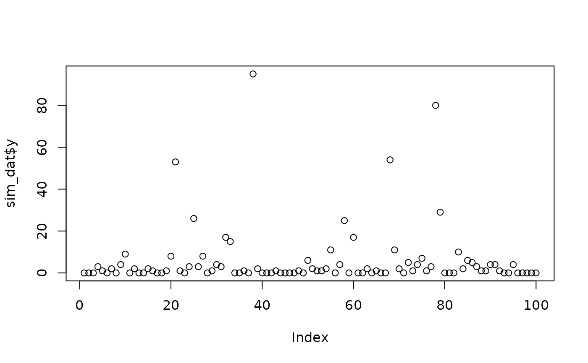

Simulate count data from Friedman's nonlinear regression
Source:R/helper_functions.R
simulate_nb_friedman.RdSimulate data from a negative-binomial distribution with nonlinear mean function.
Arguments
- n
number of observations
- p
number of predictors
- r_nb
the dispersion parameter of the Negative Binomial dispersion; smaller values imply greater overdispersion, while larger values approximate the Poisson distribution.
- b_int
intercept; default is log(1.5).
- b_sig
regression coefficients for true signals; default is log(5.0).
- sigma_true
standard deviation of the Gaussian innovation; default is zero.
- seed
optional integer to set the seed for reproducible simulation; default is NULL which results in a different dataset after each run
Value
A named list with the simulated count response y, the simulated design matrix X,
and the true expected counts Ey.
Details
The log-expected counts are modeled using the Friedman (1991) nonlinear function
with interactions, possibly
with additional Gaussian noise (on the log-scale). We assume that half of the predictors
are associated with the response, i.e., true signals. For sufficiently large dispersion
parameter r_nb, the distribution will approximate a Poisson distribution.
Here, the predictor variables are simulated from independent uniform distributions.
Note
Specifying sigma_true = sqrt(2*log(1 + a)) implies that the expected counts are
inflated by 100*a% (relative to exp(X*beta)), in addition to providing additional
overdispersion.
Examples
# Simulate and plot the count data:
sim_dat = simulate_nb_friedman(n = 100, p = 10);
plot(sim_dat$y)
